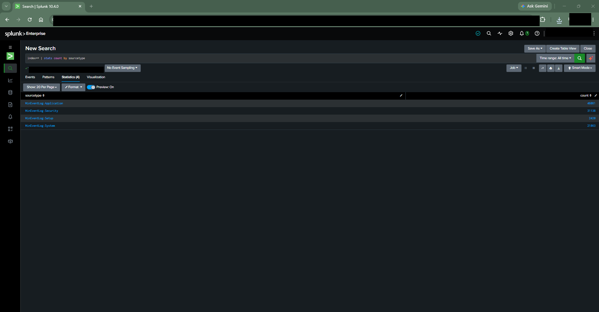
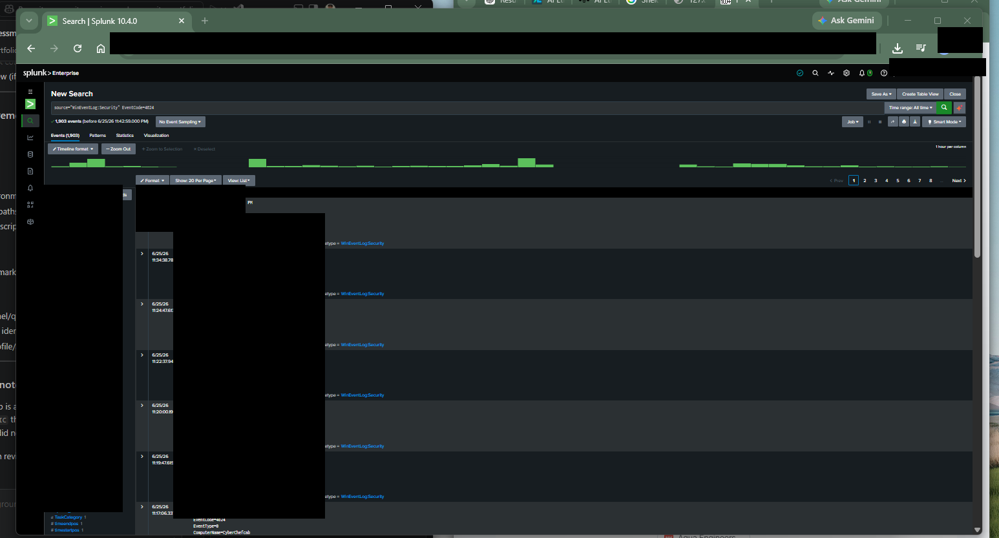
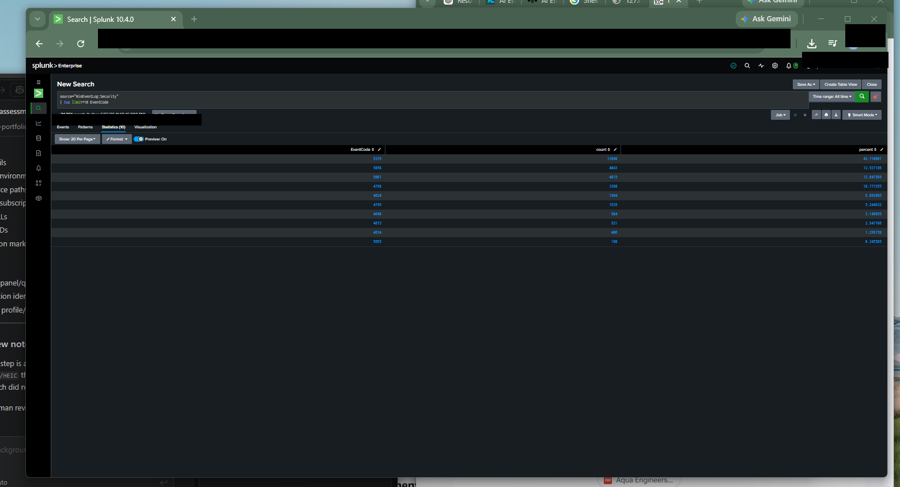
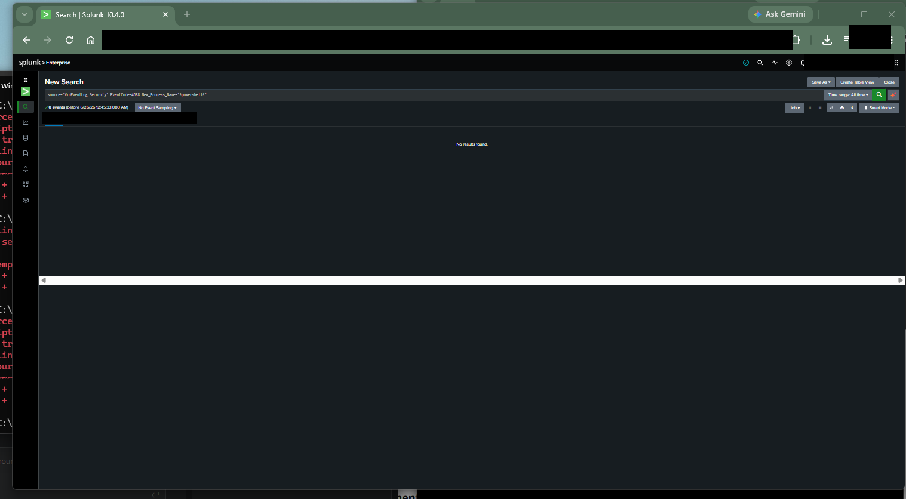
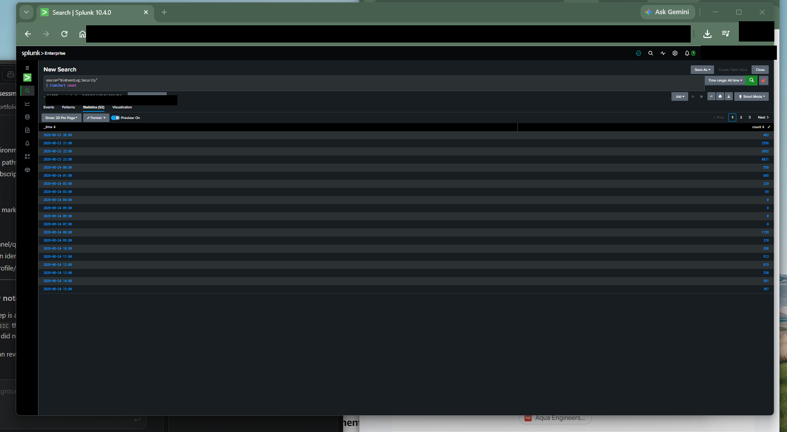
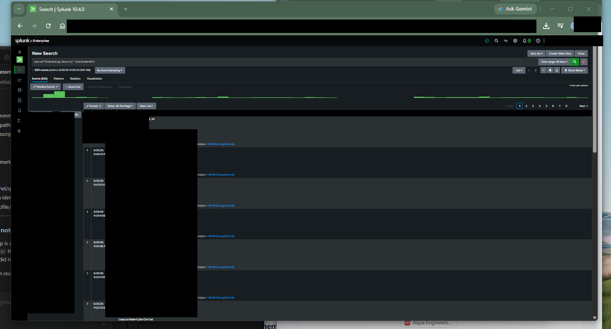
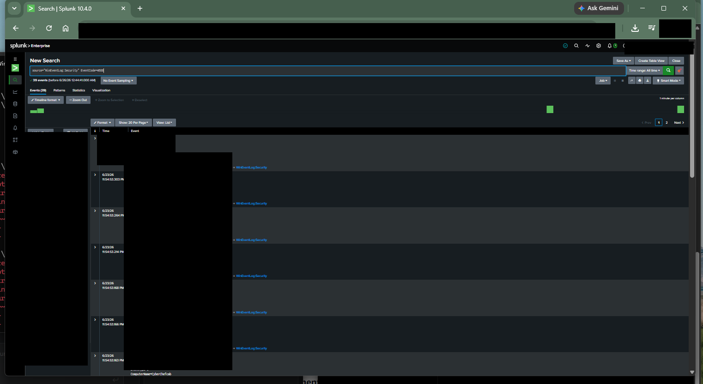
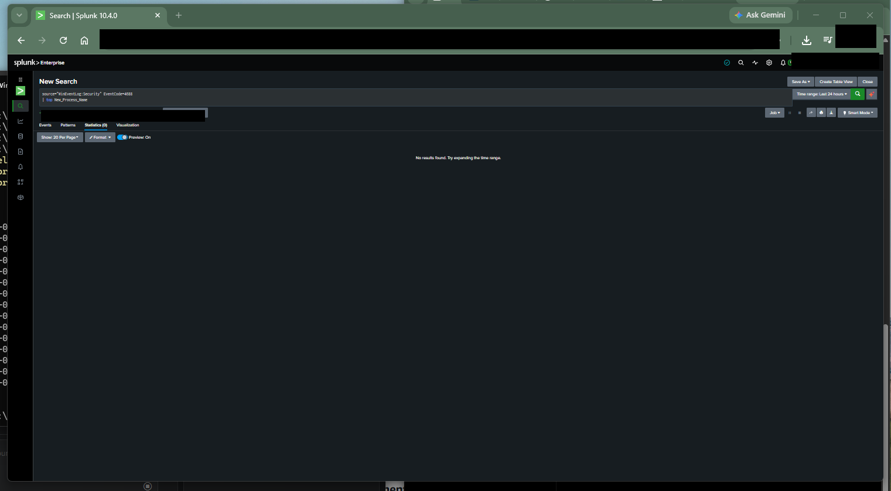

This lab demonstrates SOC analyst workflow using sanitized evidence from a working Splunk environment.
All publication artifacts were moved through evidence governance, redaction review, and public-release controls
before being included here.
Environment and Data Sources
Splunk Enterprise was used to query Windows Security Event telemetry with focus on authentication, privilege,
credential usage, process creation, and event-volume trend analysis.
Analysis method: targeted SPL searches plus aggregate views
Log Ingestion Validation
Ingestion and parsing validation confirmed searchable Windows event telemetry and usable sourcetype
categorization for SOC triage and hunt workflows.

Detection and Hunt Use Cases
Event ID 4624: successful authentication analysis
Event ID 4625: failed logon hunt with documented negative findings
Event ID 4634: logoff event activity review
Event ID 4648: explicit credential usage monitoring
Event ID 4672: privileged logon event review
Event ID 4688: process creation and top process frequency analysis
Event ID 4768: Kerberos authentication hunt with documented negative findings
Key SPL Queries (Sanitized)
source="WinEventLog:Security" EventCode=4624 | top Account_Name
source="WinEventLog:Security" EventCode=4625 | top Account_Name
source="WinEventLog:Security" | top limit=10 EventCode
source="WinEventLog:Security" EventCode=4688 | top New_Process_Name
source="WinEventLog:Security" EventCode=4648
source="WinEventLog:Security" | timechart count
Evidence Gallery (Publication-Ready)
All images below are sanitized publication-ready artifacts from the approved redaction set.







Findings and Analyst Interpretation
Authentication and logoff telemetry supports account activity monitoring workflows.
Privileged and explicit credential events provide high-value investigation pivot points.
Process creation visibility enables baseline behavior review and suspicious execution triage.
No-result hunts were documented as valid outcomes to support baseline confidence.
Limitations and No-Result Hunts
Not all searches returned matching events in the selected time range. These negative results were retained
as evidence of methodical hunt execution and transparent analyst documentation.
Skills Demonstrated
SIEM administration and search workflow
Windows Security Event analysis
SPL query development and aggregation
Authentication and privilege monitoring
Process execution triage and behavioral baselining
Evidence governance and public-release redaction controls
Framework Alignment (Conceptual)
NIST CSF 2.0: Detect, Analyze, and Respond support activities
MITRE ATT&CK concepts: Execution, Credential Access, and Discovery-related telemetry review
NICE framework alignment: SOC monitoring, analysis, and incident triage capability development
Portfolio Summary
Designed and operated a public-safe Splunk SOC lab to validate telemetry ingestion, build and run
event-focused hunts, analyze authentication and process activity, and document findings in a
governance-controlled evidence workflow suitable for recruiter and interview review.